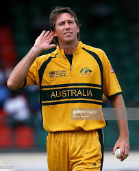
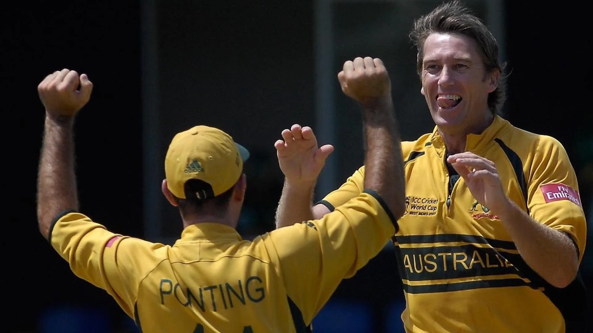

Glenn McGrath
Role: Right-arm Fast-Medium Bowler
Bio: Glenn McGrath is one of the greatest fast bowlers in the history of cricket. Known for his incredible accuracy, McGrath was a vital part of Australia’s golden era, excelling in both Test and ODI formats with his nagging line and length.
Career Stats
| Format | Matches | Innings | Wickets | Best Bowling | Average | Economy | Strike Rate | 5-wicket Hauls | 10-wicket Hauls |
|---|---|---|---|---|---|---|---|---|---|
| Test | 124 | 243 | 563 | 8/24 | 21.64 | 2.49 | 51.9 | 29 | 3 |
| ODI | 250 | 248 | 381 | 7/15 | 22.02 | 3.88 | 34.0 | 7 | 0 |
| T20 | N/A | N/A | N/A | N/A | N/A | N/A | N/A | N/A | N/A |
Memorable Moments

McGrath’s incredible 563 Test wickets made him Australia’s most successful fast bowler.
Leading wicket-taker in the 2007 ICC Cricket World Cup, guiding Australia to another title.